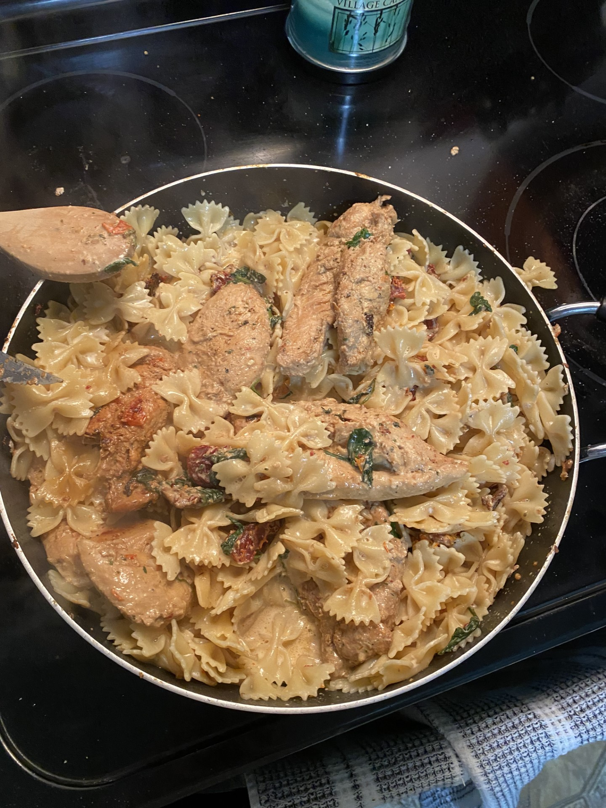
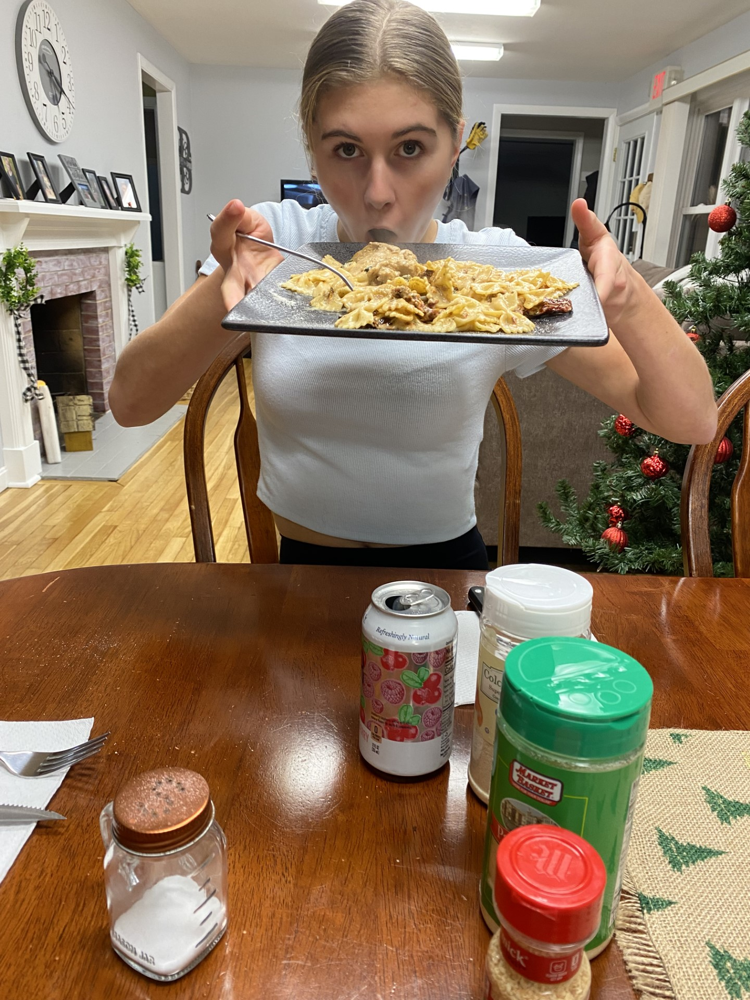

I choose to make this recipe because I had it a few weeks ago and everyone in my family loved it so I wanted to learn how to make it!
I think this was good practice cooking chicken which I don't have a ton of experience doing so praticing this was extremely helpful.
I really enjoyed making this with my sister and I feel like it was great meal to learn how to make. I think cooking the chicken was a newer experience for me and I had to cut into the pieces a couple of times to make sure there wasn't any pink left and they were fully cooked.
The only issue I had in making this recipe is that I got the wrong sun dried tomatos, the recipe calls for them to be kept in jar however I got the ones in a bag. I tried one before putting it in the recipe and it was very tough to eat so I made sure to put that right in with the chicken when it started cooking to help soften them up. If you are going to follow this recipe I would recommend trying to buy sun dried tomatos from a jar and not from a bag!
I also bought premarianted chicken that was italian flavored which helped so that I didn't have to marinate the chicken in olive and spices as the recipe from Sunny Little Kitchen mentions.
